건설기계설비기사 (2003-05-25 기출문제)
1과목: 재료역학
1. 지름 10cm인 연강봉(탄성계수 Es=210 GPa)이 외경 11cm, 내경 10cm인 구리관(탄성계수 Ec=150 GPa)사이에 끼워져 있다. 양단에서 강체평판으로 10kN의 압축하중을 가할 때 연강봉과 구리관에 생기는 응력비 σs/σc의 값은?
- 5/6
- 5/7
- 6/5
- 7/5
(정답률: 알수없음)

2. 그림과 같은 보의 중앙점에서의 굽힘모멘트는?
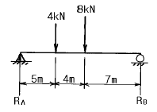
- 45 kN·m
- 34 kN·m
- 48 kN·m
- 38 kN·m
(정답률: 알수없음)
3. 그림과 같은 돌출보에 집중하중이 A 점에 5 kN과 C 점에 6 kN이 작용하고 있을 때, B 점의 반력은?
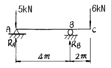
- 9 kN
- 7.5 kN
- 6 kN
- 5 kN
(정답률: 알수없음)
4. 그림의 도심 G의 위치는 Z 축에서 몇 cm 떨어져 있는가?
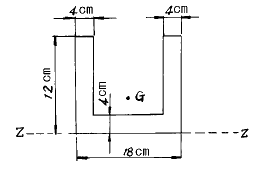
- 4.25
- 4.82
- 5.04
- 5.24
(정답률: 알수없음)
5. 재질이 같은 A, B 두 균일 단면의 봉에 인장하중을 작용 시켜 변형률을 측정하였더니
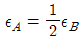
이었다. 봉 B의 단위체적속에 저장되는 탄성에너지는 봉 A의 몇 배 인가?- 4배
- 2배
- 1/2배
- 1/4배
(정답률: 알수없음)
6. 탄성한도내에서 인장력을 받는 강봉의 단위체적당의 변형에너지의 값을 나타내는 식은? (단, σ는 응력, ν는 포아송의 비, E는 탄성계수이다.)
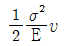
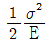
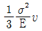
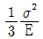
(정답률: 알수없음)
7. 탄성계수 E, 포아송 비 ν, 한변의 길이가 a인 정육면체의 탄성체를 강체인 동일 형태의 구멍에 넣어 압력 P를 가한다. 탄성체와 구멍사이의 마찰을 무시하면 탄성체의 윗면의 변위 δ는?
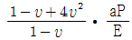
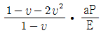
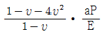
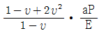
(정답률: 알수없음)
8. 인장하중을 받고 있는 부재에서 전단응력 τ 가 수직응력의 1/2 이 되는 경사단면의 경사각은?
- θ = tan-1(1/2)
- θ = tan-1(1)
- θ = tan-1(2)
- θ = tan-1(4)
(정답률: 알수없음)
9. 길이가 L인 양단 고정보의 중앙점에 집중하중 P가 작용할 때 중앙점의 최대 처짐은? (단, E : 탄성계수, Ⅰ: 단면 2차모멘트)
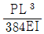
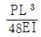
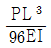
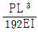
(정답률: 알수없음)
10. 그림에서 반력 R1의 크기는 몇 N 인가? (단, 점 A는 하중 P의 작용점이다.)
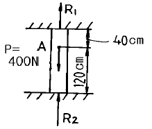
- 200
- 300
- 400
- 100
(정답률: 알수없음)
11. 지름 d=5 mm인 와이어로 제작된 반지름 R=3cm의 코일스프링에 하중 P = 1 kN이 작용할 때, 와이어 단면에 생기는 비틀림 응력은 몇 MPa 인가?
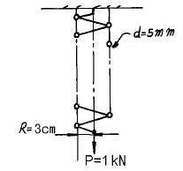
- 1222
- 1322
- 1832
- 2962
(정답률: 알수없음)
12. 탄성계수(E)가 200 GPa인 강의 전단탄성계수(G)는? (단, 포아송비는 0.3이다.)
- 66.7 GPa
- 76.9 GPa
- 100 GPa
- 267 GPa
(정답률: 알수없음)
13. 변형체 내부의 한점이 3차원 응력상태에 있고 σx=25MPa, σy=30MPa, τxy=-15MPa 인 평면응력 상태에 있다면, 이 점에서 절대 최대전단 응력의 크기는 몇 MPa 인가?
- 8.3
- 15.2
- 21.4
- 42.7
(정답률: 알수없음)
14. 그림과 같이 재질과 단면이 동일하고 길이가 다른 2개의 외팔보를 자유단에서의 처짐이 동일하게 하는 외력의 비 P1/P2 는?
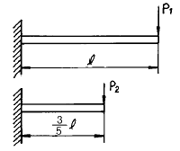
- 0.547
- 0.437
- 0.325
- 0.216
(정답률: 알수없음)
15. 단면적 A의 중립축에 대한 단면 2차모멘트를 IG, 중립축에서 y 거리만큼 떨어진 평행한 축에 대한 단면 2차모멘트를 I 라고 하면 다음 중 옳은식은?
- I = IG - Ay2
- IG = I + A2y3
- IG = I - Ay2
- I = IG + Ay3
(정답률: 알수없음)
16. 그림과 같은 평면응력 상태에서 최대 주응력은 몇 MPa인가?
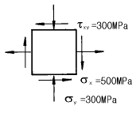
- 500
- 600
- 700
- 800
(정답률: 알수없음)
17. 그림과 같이 직선적으로 변하는 불균일 분포하중을 받고 있는 단순보의 전단력선도는?
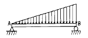
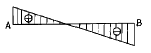
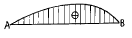
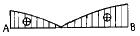
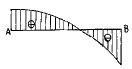
(정답률: 알수없음)
18. 2 Hz로 돌고 있는 중실 원형축이 150 ㎾의 동력을 전달해야 된다고 한다. 허용 전단응력이 40 MPa 일 때 요구되는 최소직경은 몇 ㎜ 인가?
- 115
- 155
- 210
- 265
(정답률: 알수없음)
19. 삼각형 단면의 밑변과 높이가 b×h = 20㎝×30㎝일 때 밑변에 평행하고 도심을 지나는 축에 대한 단면 2차모멘트는?
- 22500 cm4
- 45000 cm4
- 5000 cm4
- 15000 cm4
(정답률: 알수없음)
20. 그림과 같이 외팔보에 균일분포하중이 전 길이에 걸쳐 작용할 때 자유단의 처짐 δ는 얼마인가? (단, EI : 강성계수)
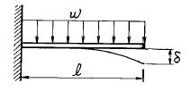
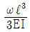
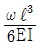
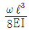
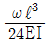
(정답률: 알수없음)
2과목: 기계열역학
21. 공기 1㎏의 체적 0.85m3로 부터 압력 500 kpa, 온도 300℃로 변화하였다. 체적의 변화는 약 얼마인가? (단, 공기의 기체상수는 0.287 kJ/kg.K 이다.)
- 0.351 m3 증가
- 0.331 m3 감소
- 0.521 m3 감소
- 0.561 m3 증가
(정답률: 알수없음)
22. 속도 250m/s, 온도 30℃ 인 공기의 마하수를 구하면? (단, 공기의 비열비 k = 1.4 라고 한다.)
- 0.716
- 0.532
- 0.213
- 0.433
(정답률: 알수없음)
23. 가역단열펌프에 100kPa, 50℃의 물이 2 kg/s로 들어가 4 MPa로 압축된다. 이 펌프의 소요동력은? (단, 50℃에서 포화액(saturated liquid)의 비체적은 0.001 m3/kg이다.)
- 3.9 kW
- 4.0 kW
- 7.8 kW
- 8.0 kW
(정답률: 알수없음)
24. 다음 중 바르게 설명한 것은?
- 이상기체의 내부에너지는 온도와 압력의 함수이다.
- 이상기체의 내부에너지는 온도만의 함수이다.
- 이상기체의 내부에너지는 항상 일정하다.
- 이상기체의 내부에너지는 온도와 무관하다.
(정답률: 알수없음)
25. 0.5 kg의 어느 기체를 압축하는데 15kJ의 일을 필요로 하였다. 이 때 12kJ의 열이 계 밖으로 손실 전달되었다. 내부에너지의 변화는 몇 kJ 인가?
- -27
- 27
- 3
- -3
(정답률: 알수없음)
26. 노즐의 출구압력을 감소시키면 질량유량이 증가하다가 어느 압력이상 감소하면 질량유량이 더 이상 증가하지 않는 현상을 무엇이라 하는가?
- 초킹(choking)
- 초음속
- 단열열낙차
- 충격
(정답률: 알수없음)
27. 증기 동력 시스템에서 이상적인 사이클로 Carnot 사이클을 택하지 않고 Rankine 사이클을 택한 이유는 무엇인가?
- 이론적으로 Carnot 사이클을 구성하는 것이 불가능하다.
- Rankine 사이클의 효율이 동일한 작동 온도를 갖는 Carnot 사이클의 효율 보다 높다.
- 수증기와 액체가 혼합된 습증기를 효율적으로 압축하는 펌프를 제작하는 것이 어렵다.
- 보일러에서 열전달 과정을 정온 과정으로 가정하는 것이 타당하지 않다.
(정답률: 알수없음)
28. 523℃의 고열원으로부터 1MW의 열을 받아서 300K의 대기중으로 600kW의 열을 방출하는 열기관이 있다. 이 열기관의 효율은?
- 0.4
- 0.43
- 0.6
- 0.625
(정답률: 알수없음)
29. 어느 가스 2㎏이 압력 200kPa, 온도 30℃의 상태에서 체적 0.8m3를 점유한다. 이 가스의 가스상수는 약 몇 kJ/kg.K 인가?
- 0.264
- 0.528
- 2.67
- 2.64
(정답률: 알수없음)
30. 이원 냉동 사이클에 대해 맞는 것은?
- 고온부와 저온부에 동일한 냉매를 사용한다.
- 동일한 압력에서 저온일 때 비체적이 큰 냉매를 저온부에, 비체적이 작은 냉매를 고온부에 충전 한다.
- 이원냉동사이클은 다른 사이클보다 효율이 낮다.
- 이원냉동사이클은 이단압축사이클보다 낮은 온도를 얻을 때 사용한다.
(정답률: 알수없음)
31. R-12를 작동유체로 사용하는 이상적인 증기압축 냉동사이클이 있다. 이 사이클은 증발기에서 104.08 kJ/kg의 열을 흡수하고, 응축기에서 136.85 kJ/kg의 열을 방출한다고 한다. 이 사이클의 냉방 성적계수는?
- 0.31
- 1.31
- 3.18
- 4.17
(정답률: 알수없음)
32. 엔트로피에 관한 다음 설명 중 맞는 것은?
- Clausius 방정식에 들어가는 온도 값은 절대온도(K)와 섭씨온도(℃) 모두를 사용할 수 있다.
- 엔트로피는 경로에 따라 값이 다르다.
- 가역과정의 열량은 hs 선도상에서 과정 밑 부분의 면적과 같다.
- 엔트로피 생성항은 항상 양수이다.
(정답률: 알수없음)
33. 랭킨 사이클에 대한 설명 중 맞는 것은?
- 펌프를 통해 엔트로피는 증가하거나 감소한다.
- 터빈을 통해 엔트로피는 증가하거나 감소한다.
- 보일러와 응축기를 통한 실제 과정에서 압력강하 때문에 증발온도 및 응축온도가 감소한다.
- 터빈 출구의 건도는 낮을수록 좋다.
(정답률: 알수없음)
34. 단열된 용기안에 이상기체로 온도와 압력이 같은 산소 1kmol과 질소 2 kmol이 얇은 막으로 나뉘어져 있다. 막이 터져 두 기체가 혼합될 경우 엔트로피의 변화는?
- 변화가 없다.
- 증가한다.
- 감소한다.
- 증가한후 감소한다.
(정답률: 알수없음)
35. 밀폐된 실린더 내의 기체를 피스톤으로 압축하여 300kJ의 열이 발생하였다. 압축일량이 400kJ이라면 내부에너지 증가는?
- 100 kJ
- 300 kJ
- 400 kJ
- 700 kJ
(정답률: 알수없음)
36. 이론 정적사이클에서 단열압축을 할 때 압축이 시작될 때의 게이지(gage) 압력이 91 kPa이고, 압축이 끝났을 때의 게이지(gage)압력이 1317 kPa라고 하면 이 사이클의 압축비는? (단, k = 1.4 라 한다.)
- 약 4.16
- 약 5.24
- 약 5.75
- 약 6.74
(정답률: 알수없음)
37. 공기 표준 Brayton 사이클에 대한 다음 설명 중 잘못된 것은?
- 단순 가스 터빈에 대한 이상 사이클이다.
- 열교환기에서의 과정은 등온 과정으로 가정한다.
- 터빈에서의 과정은 가역 단열 팽창 과정으로 가정한다.
- 압축기에서는 터빈에서 생산되는 일의 40% 내지 80%를 소모한다.
(정답률: 알수없음)
38. 온도가 127℃, 압력이 0.5MPa, 비체적 0.4m3/㎏인 이상기체가 같은 압력하에서 비체적이 0.3m3/㎏으로 되었다면 온도는 몇 도로 되겠는가?
- 95.25℃
- 27℃
- 100℃
- 25.2℃
(정답률: 알수없음)
39. 수소 1kg이 완전 연소할 때 9kg의 H2O가 생성된다면 최소 산소량은 몇 kg인가?
- 1
- 2
- 4
- 8
(정답률: 알수없음)
40. 50℃, 25℃, 10℃의 온도인 3가지 종류의 액체 A, B, C가 있다. A와 B를 동일중량으로 혼합하면 40℃로 되고, A와 C를 동일중량으로 혼합하면 30℃로된다. B와 C를 동일 중량으로 혼합할 때는 몇 ℃로 되겠는가?
- 16℃
- 18.4℃
- 20℃
- 22.5℃
(정답률: 알수없음)
3과목: 기계유체역학
41. 그림과 같이 비중이 0.83인 기름이 12m/s의 속도로 수직 고정평판에 직각으로 부딪치고 있다. 판에 작용되는 힘 F는 약 몇 N 인가?
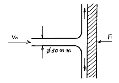
- 23.5
- 28.9
- 288.6
- 234.7
(정답률: 알수없음)
42. 그림과 같은 수문(ABC)에서 A점은 힌지로 연결되어 있다. 수문을 그림과 같은 닫은 상태로 유지하기 위해 필요한 힘(F)는 몇 kN 인가?
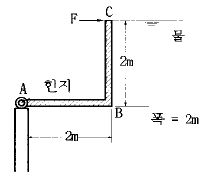
- 39.2
- 52.3
- 58.8
- 78.4
(정답률: 알수없음)
43. 그림과 같은 평판유동을 완전발달 층류로 가정할때 평균속도는 최대속도의 몇배인가?
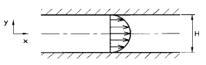
- 0.5
- 0.6
- 0.667
- 0.75
(정답률: 알수없음)
44. 유량 Q가 점성계수 μ, 관직경 D, 압력구배
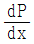
의 함수일 경우 차원해석을 이용한 관계식은?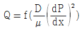
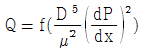
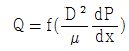
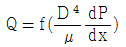
(정답률: 알수없음)
45. 지름이 20㎝인 관속을 초당 400 N의 물이 흐르고 있다. 관내에서의 평균 속도는 몇 m/s 인가?
- 1.3
- 130
- 0.13
- 13
(정답률: 알수없음)
46. 10 L의 액체에 10 MPa의 압력을 가했더니 체적이 9.99 L로 감소하였다. 이 액체의 체적탄성계수 K는?
- 10-10 Pa
- 107 Pa
- 109 Pa
- 1010 Pa
(정답률: 알수없음)
47. 다음 중 음속이 아닌 것은? (단, k=비열비, P=절대압력, ρ=밀도, T=절대온도, E=체적탄성계수, R=기체상수)
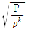
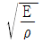
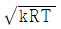
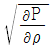
(정답률: 알수없음)
48. 지름 10cm인 원관에 기름(비중=0.85, 동점성계수=1.27×10-4 m2/s)이 0.01 m3/s 의 유량으로 흐르고 있다. 이 때 관마찰계수 f는?
- 0.046
- 0.064
- 0.080
- 0.120
(정답률: 알수없음)
49. 어떤 밸브의 손실계수가 7, 관의 지름은 5 cm, 관마찰계수가 0.035일 때 밸브에 의한 손실수두에 해당하는 관의 상당길이는 몇 m인가?
- 10
- 20
- 30
- 40
(정답률: 알수없음)
50. 2차원 속도장이 다음과 같이 주어졌을 때 유선의 방정식은 어느 것인가? (여기서 C는 상수이다.)
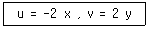
- x2 y = C
- x y2 = C
- x y = C
- x/y = C
(정답률: 알수없음)
51. 다음 중 물리량의 차원이 틀리게 표시된 것은? (단, F:힘, M:질량, L:길이, T:시간을 의미한다.)
- 운동량 : MLT-1
- 각운동량 : ML2T-1
- 동력 : FLT-1
- 에너지 : MLT-1
(정답률: 알수없음)
52. 골프공의 표면이 요철되어 있는 이유에 대한 설명으로 맞는 것은?
- 표면을 경도를 증가시키기 위해서이다.
- 무게를 줄이기 위해서이다.
- 전체 유동 저항을 줄이기 위해서이다.
- 박리를 빨리 일으키기 위해서이다.
(정답률: 알수없음)
53. 공기가 게이지압력 2.06bar의 상태로 지름이 0.15m인 관속을 흐르고 있다. 이 때 대기압은 1.03bar이고 공기 유속이 4m/s라면 질량유량(mass flow rate)을 계산하면 약 몇 kg/s인가? (단, 공기의 온도는 37℃이고, 가스상수는 287.1 J/kg.K 이며 1bar=105 Pa이다.)
- 0.245
- 2.45
- 0.026
- 25
(정답률: 알수없음)
54. 안지름 15㎝, 길이 1000m인 수평 직원관속에 물이 매 초 50 L로 흐르고 있다. 관마찰계수가 0.02일 때 마찰손실수두는 몇 m 인가?
- 54.4
- 48.5
- 86.9
- 38.6
(정답률: 알수없음)
55. 자유 수면하 5 m인 곳에 도심을 가진 폭 2 m, 길이 3 m인 사각 평판이 수면과 30° 경사지게 길이 방향으로 놓여 있다. 전압력의 작용점의 위치는 수면에서 얼마만한 깊이에 있겠는가?
- 5 m
- 10 m
- 10.075 m
- 5.0375 m
(정답률: 알수없음)
56. 강제 볼텍스(forced vortex)운동에 대한 설명 중 옳은 것은?
- 자유 볼텍스(free vortex)와 반대 방향으로 돈다.
- 유체가 고체처럼 회전한다.
- 속도의 크기는 중심으로부터의 거리에 반비례 해서 변한다.
- 순환(circulation)이 "0"이 된다. (Γ= 0)
(정답률: 알수없음)
57. 지름이 15cm인 관에 원유(비중 0.88)가 흐르고 있고 피토-정압관(수은:비중 13.6)에 의하여 4 cm의 높이 차이를 나타냈다면 중심선에서의 유속은 약 몇 m/s 인가? (단, 보정계수(C)는 1 이다.)
- 124.14
- 10.64
- 3.36
- 6.72
(정답률: 알수없음)
58. 가역 단열조건하에서 이상기체의 체적탄성계수를 바르게 표현한 것은? (단, k=비열비, ρ=밀도, P=압력)
- P / k
- kP
- kP / ρ
- ρ κ P
(정답률: 알수없음)
59. 계기압력(gauge pressure)이란 무엇인가?
- 측정위치에서의 대기압을 기준으로 하는 압력
- 표준 대기압을 기준으로 하는 압력
- 절대압력 0(영)을 기준으로 하여 측정하는 압력
- 임의의 압력을 기준으로 하는 압력
(정답률: 알수없음)
60. 유동방향에 수직으로 놓인 가로 5m, 세로 4m의 직사각형평판이 정지된 공기중을 10m/s로 운동할 때 필요한 동력은 몇 kW 인가? (단, 공기의 밀도는 1.23 kg/m3, 정면도 항력계수는 1.1이다.)
- 1.3
- 13.5
- 18.1
- 324.1
(정답률: 알수없음)
4과목: 유체기계 및 유압기기
61. 다음 그림은 어느 공기 표준 사이클의 압력(P)-체적(V) 선도인가?
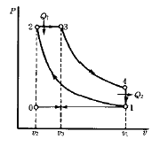
- 오토사이클
- 디젤사이클
- 사바테사이클
- 카르노사이클
(정답률: 알수없음)
62. 다음 중 디젤기관의 연소과정과 운전특성에 영향을 주는 요소로 가장 거리가 먼 것은?
- 연료 분사량
- 연료 분사시기
- 배기가스 재순환율
- 연소실의 종류
(정답률: 알수없음)
63. 총 배기량이 1800cc, 제동 평균 유효 압력이 8 kgf/cm2인 4행정 가솔린기관의 축 토크는 몇 kgf.m 인가?
- 5.75
- 15.5
- 23.0
- 11.5
(정답률: 알수없음)
64. 방열기의 입구 온도 80℃, 출구 온도 60℃, 냉각수의 비열 1 kcal/kgf, 연료의 저위 발열량 10000 kcal/kgf, 기관의 연료소비율 20 kgf/h 이고 총 발열량중 냉각수로 전달되는 열량의 비율이 25%라면 이 기관의 냉각수 유량은 몇 kgf/h 인가?
- 250
- 400
- 2,500
- 4,000
(정답률: 알수없음)
65. 다음 중 기관의 위험 회전수를 바르게 설명한 것은?
- 상용회전수를 넘는 회전수
- 크랭크축의 고유진동수와 일치하는 회전수
- 흡, 배기가 따를 수 없는 회전수
- 연료분사가 따를 수 없는 회전수
(정답률: 알수없음)
66. 가솔린기관에서 유효한 일로 전환되는 열량은 연료의 전 에너지 중 약 몇 %나 되는가?
- 약 30%
- 약 42%
- 약 46%
- 약 52%
(정답률: 알수없음)
67. 다음 중 배기가스 저감대책의 후처리 시스템에 적용되는 사항으로 짝지어진 것은?
- 압축비, 연소실 형상, 밸브 개폐시기, 흡기관 형상, 층상급기 등
- 전자제어식 기화기, 연료분사 장치, 공연비 제어, 배기가스 재순환 시스템 등
- 전자제어 점화장치, 점화시기제어 등
- 3원촉매기, 서멀 리액터방식, 환원촉매기 등
(정답률: 알수없음)
68. 가솔린 기관에 비하여 디젤기관의 장점이 아닌 것은?
- 열효율이 높아 연료 소비율이 적다.
- 저속고출력이 가능하다.
- CO, HC의 배출량이 비교적 적다.
- 실린더 체적당 출력이 크다.
(정답률: 알수없음)
69. 가스터빈 기관이 다른 내연기관과 비교하여 장점이 아닌 것은?
- 윤활유 소비가 적고 유지비가 싸다.
- 가볍고 구조가 간단하다.
- 저속운전시 성능이 양호하다.
- 저질연료 사용이 가능하다.
(정답률: 알수없음)
70. 오일 탱크의 부속 장치에서 오일 탱크로 돌아오는 오일과 펌프로 가는 오일을 분리시키는 역할을 하는 것은?
- 버플
- 스트레이너
- 노치 와이어
- 드레인 플러그
(정답률: 알수없음)
71. 크랭킹 압력의 설명으로 다음 중 가장 적합한 것은?
- 과도적을 상승한 압력의 최대값
- 릴리프 또는 체크밸브에서 압력이 상승하여 밸브가 열리기 시작하는 압력
- 파괴되지 않고 견디어야 하는 시험압력
- 실제로 파괴되는 압력
(정답률: 알수없음)
72. 굴착기에서 송출 압력이 55(㎏/㎝2)이고, 송출 유량이 30(ℓ /min)인 펌프의 동력은 약 몇 kW 인가?
- 2.1
- 2.3
- 2.7
- 2.9
(정답률: 알수없음)
73. 작동유의 점성에 관계없이 유량을 조절할 수 있으며, 조정범위가 크고 미세량도 조정 가능한 밸브는?
- 서보 밸브(servo valve)
- 체크 밸브(check valve)
- 교축 밸브(throttle valve)
- 안전 밸브(safety valve)
(정답률: 알수없음)
74. 유압유의 점도지수(Viscosity index) 설명으로 적합한 것은?
- 압력변화에 대한 점도변화의 율을 나타내는 척도이다.
- 온도변화에 대한 점도변화의 율을 나타내는 척도이다.
- 공업점도 세이볼트(Saybolt)와 절대 점도 포아스(Poise)와의 비이다.
- 파라핀(Parafin)계 펜실바니아 원유의 함유량을 나타내는 척도이다.
(정답률: 알수없음)
75. 유압 실린더와 병렬로 유량제어 밸브를 설치하고 실린더에 유입되는 유량을 제어하는 속도제어 회로의 방식은?
- 미터 인 회로
- 미터 아웃 회로
- 블리드 온 회로
- 블리드 오프 회로
(정답률: 알수없음)
76. 치차 펌프에서 축동력의 증가, 치차의 진동, 공동 현상에 의한 기포발생 등의 원인이 되는 가장 큰 이유는?
- 치차의 치선과 케이싱 사이의 간극
- 치차의 이의 두께
- 치차의 백래시
- 치차의 표면 가공 불량
(정답률: 알수없음)
77. 유압 브레이크 장치의 주요 구성 요소가 아닌 것은?
- 마스터 롤러
- 마스터 실린더
- 브레이크 슈
- 브레이크 드럼
(정답률: 알수없음)
78. 보기와 같은 유압.공기압 도면기호는 무슨 기호인가?
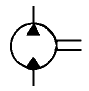
- 정용량형 유압 펌프.모터
- 공기압 모터
- 가변 용량형 유압 펌프.모터
- 진공 펌프
(정답률: 알수없음)
79. 유체 컨버터의 장점으로 가장 적합한 것은?
- 원동기 시동의 경우 반드시 무부하 상태에서 실시한다.
- 과부하 때문에 기관이 정지하거나 손상되는 일이 없다.
- 충격력이나 진동을 유체에 의해 완화할 수 없으며, 원동기의 수명 연장에 도움된다.
- 변속을 위하여 클러치가 필요없다.
(정답률: 알수없음)
80. 디젤기관의 연료분사에 있어서의 분무형성에 필요한 주요 3대 요건으로 가장 옳은 것은?
- 무화, 관통력, 분사량
- 무화, 분사율, 분포
- 무화, 관통력, 분포
- 분사율, 발열량, 분포
(정답률: 알수없음)
5과목: 건설기계일반 및 플랜트배관
81. 단조온도에 대한 설명 중 틀린 것은?
- 단조 가공 완료온도는 재결정 온도 근처로 하는 것이 좋다.
- 단조 완료 온도가 재결정 온도 이상이면 결정이 미세화 된다.
- 단조온도를 최고 단조온도 보다 높게 하면 산화가 심하다.
- 단조온도가 낮으면 가공경화가 된다.
(정답률: 알수없음)
82. 버니어 캘리퍼스의 어미자에 새겨진 0.5mm 의 24눈금(12mm)을 아들자에게 25등분할 때, 어미자와 아들자의 1눈금의 차는 얼마인가?
- 1/50mm
- 1/25mm
- 1/24mm
- 1/20mm
(정답률: 알수없음)
83. 소성 가공의 방법이 아닌 것은?
- 컬링 ( curling )
- 엠보싱 ( embossing )
- 카핑 ( copying )
- 코이닝 ( coining )
(정답률: 알수없음)
84. 선반 정밀도의 검사에 필요하지 않는 측정기는?
- 테스트 바
- 정밀 수준기
- 다이얼 인디케이터
- 진동계
(정답률: 알수없음)
85. 상수도관용 밸브류의 주조용 목형은 다음 중 어느 것이 가장 좋은가?
- 조립목형(built - up pattern)
- 회전목형(sweeping pattern)
- 골격목형(skeleton pattern)
- 긁기목형(strickle pattern)
(정답률: 알수없음)
86. 무한궤도식 불도저의 동력전달계통에 속하지 않는 것은?
- 변속기(變速機)
- 유도륜(誘導輪)
- 조향(操向)클러치
- 기동륜(起動輪)
(정답률: 알수없음)
87. 압연(rolling)작업에 가장 가까운 것은?
- 신선작업(伸線作業)
- 전단작업(剪斷作業)
- 딥 드로잉(deep drawing)
- 분괴작업(分塊作業)
(정답률: 알수없음)
88. 오스테나이트 조직을 굳은 조직인 베이나이트로 변환시키는 항온 변태 열처리법은?
- 서브제로
- 마르템퍼링
- 오스포밍
- 오스템퍼링
(정답률: 알수없음)
89. 빌트업 에지가 생기는 것을 방지하기 위한 대책으로 틀린 것은?
- 바이트 윗면 경사각을 크게 한다.
- 절삭 속도를 크게 한다.
- 윤활성이 좋은 절삭유를 준다.
- 절삭깊이를 극히 크게 한다.
(정답률: 알수없음)
90. 다음 재료중에서 가스절단이 가장 곤란한 것은?
- 연강
- 주철
- 알루미늄
- 고속도강
(정답률: 알수없음)
91. 진동 롤러의 용량(capacity)표시 방법 중 옳은 것은?
- 선압(線壓)
- 다짐폭(幅)
- 엔진출력(出力)
- 중량(重量)
(정답률: 알수없음)
92. 17톤급 불도저의 전진 2단에서의 견인력이 7500 kgf 이고, 이 때의 작업속도가 3.6 ㎞/hr 라고 하면, 견인 출력은 몇 PS 인가?
- 85
- 100
- 125
- 150
(정답률: 알수없음)
93. 콤프레서(compressor)의 규격을 표시하는 것은?
- kg
- m3
- m3/mm
- m3/min
(정답률: 알수없음)
94. 콘크리트 뱃칭 플랜트의 규격으로 옳은 것은?
- 콘크리트의 시간당 생산량(ton/hr)
- 콘크리트의 분당 생산량(m3/min)
- 시공할 수 있는 표준 폭(m)
- 콘크리트 탱크의 용량(리터)
(정답률: 알수없음)
95. 불도우저(bull dozer)의 진행 방향에 대하여 블레이드를 임의의 각도로 기울일 수 있으며, 산이나 들 등에서 도로 공사때 높은 곳의 흙을 낮은 곳으로 밀어내는 데, 편리하도록 되어 있는 것은?
- 앵글 도우저
- 레이크 도우저
- U형 도우저
- 트리밍 도우저
(정답률: 알수없음)
96. 지게차의 규격 표시 기준은?
- 자체중량
- 마스터의 높이
- 최대들어올림 중량
- 들어올림 높이
(정답률: 알수없음)
97. 건설기계의 분류 중 운반기계에 속하는 것은?
- 벨트 컨베이어(Belt Conveyor)
- 콘크리트 스프레더(Concrete Spreader)
- 아스팔트 플랜트(Asphalt Plant)
- 아스팔트 피니셔(Asphalt Finisher)
(정답률: 알수없음)
98. 자주식 로우드 롤러(road roller)를 축의 배열과 바퀴의 배열에 따라 분류할 때 일반적인 종류가 아닌 것은?
- 1축 1륜
- 2축 2륜
- 2축 3륜
- 3축 3륜
(정답률: 알수없음)
99. 전기 화학가공(전해 가공)의 공작액은?
- 변압기유
- 산성 수용액
- 터어빈유
- 식염수
(정답률: 알수없음)
100. 모우터그레이더의 규격 표시로 가장 적합한 것은?
- 스케리 파이어(Scarifier)의 발톱(teeth) 수로 나타낸다.
- 엔진정격 마력을 HP로 나타낸다.
- 표준 배토판의 길이(m)로 나타낸다.
- 전륜간 거리로 나타낸다.
(정답률: 알수없음)
압축하중이 가해지면, 연강봉과 구리관은 각각 압축응력과 압축변형을 받는다. 이 때, 연강봉과 구리관의 단면적은 다르므로, 압축응력과 압축변형도 다르다.
연강봉의 압축응력을 구하기 위해서는 다음과 같은 공식을 사용할 수 있다.
σs = F/As
여기서, F는 압축하중, As는 연강봉의 단면적이다. 연강봉의 단면적은 다음과 같다.
As = πrs2
여기서, rs는 연강봉의 반지름이다. 따라서,
As = π(0.⑤)2 = 0.00785 m2
구리관의 압축응력을 구하기 위해서도 같은 공식을 사용할 수 있다.
σc = F/Ac
여기서, Ac는 구리관의 단면적이다. 구리관의 단면적은 다음과 같다.
Ac = π(rc2 - rs2)
여기서, rc는 구리관의 반지름이다. 따라서,
Ac = π(0.⑤52 - 0.⑤2) = 0.00307 m2
따라서, 연강봉과 구리관의 압축응력비는 다음과 같다.
σs/σc = (F/As)/(F/Ac) = Ac/As = 0.00307/0.00785 = 0.391
따라서, 응력비는 0.391이다. 이 값은 보기 중에서 주어진 값과 일치하지 않는다.
하지만, 이 문제에서는 탄성계수도 주어졌으므로, 이를 이용하여 응력비를 구할 수 있다. 탄성계수는 다음과 같은 공식으로 구할 수 있다.
E = σ/ε
여기서, E는 탄성계수, σ는 응력, ε는 변형률이다. 두 재료가 동일한 변형률을 받는다고 가정했으므로, 두 재료의 탄성계수는 다음과 같다.
Es/σs = Ec/σc
따라서,
σs/σc = Ec/Es = 150/210 = 5/7
따라서, 정답은 "5/7"이다.